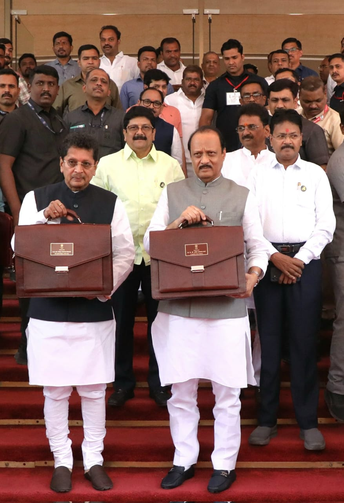
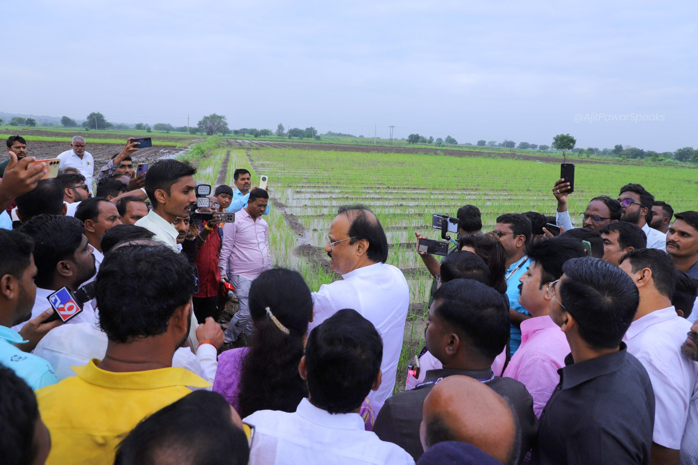
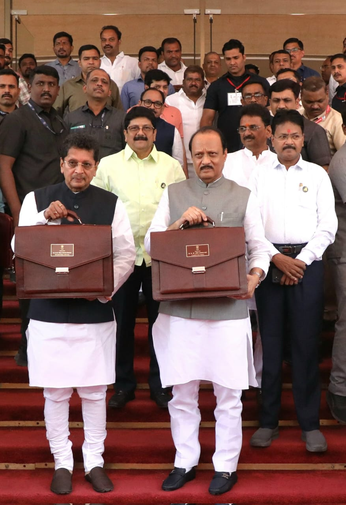
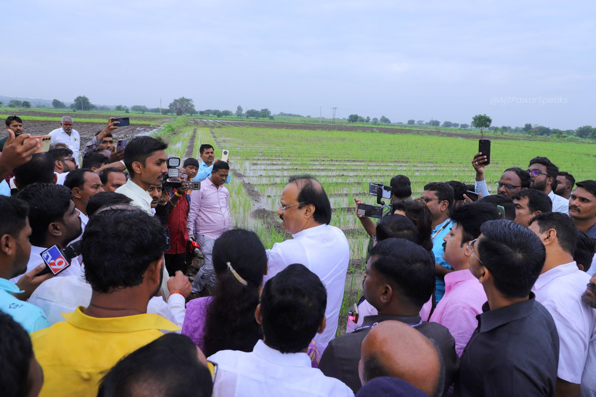

Budget Session Speech
Documentary Archive
An in-depth look at the fiscal strategies proposed to balance infrastructure spending with social welfare schemes in the latest state budget.
Read TranscriptAdministrator | Reformist | Policymaker
A comprehensive documentary on the administrative philosophy, infrastructure initiatives, and governance legacy shaping modern Maharashtra.
Born on July 22, 1959, in Deolali Pravara of Ahmednagar district, Ajit Anantrao Pawar emerged from a background deeply connected to Maharashtra’s cooperative and agrarian culture. Raised in Katewadi, Baramati, his formative years were shaped by rural discipline, grassroots realities, and exposure to institutional working methods. His father, Anantrao Pawar, worked with noted filmmaker V. Shantaram, contributing to a practical and work-oriented upbringing rather than a purely political one.
Widely addressed as “Dada” (Elder Brother), Ajit Pawar earned a reputation as a decisive and result-oriented administrator. Known for early-morning reviews and strict timelines, he emphasized efficiency within government systems. His administrative approach rested on three core pillars: Infrastructure Modernization, Financial Discipline, and Water Resource Management. These principles consistently guided his policy decisions across departments.
Although formally educated in Pune, his most influential learning occurred within Maharashtra’s cooperative banking sector. As Chairman of the Pune District Central Cooperative Bank (1991–2007), he strengthened rural credit systems and improved institutional profitability. This period shaped his understanding of agricultural economics, rural finance, and large-scale public administration.
Ajit Pawar passed away in January 2026, marking the end of a long and influential public life. His death was widely mourned across Maharashtra, particularly in rural regions where his policies had a direct and lasting impact. Beyond political roles, his legacy continues through infrastructure projects, irrigation networks, cooperative institutions, and administrative reforms that remain integral to the state’s governance framework.
Years in Public Life
Terms as Deputy Chief Minister
Projects Approved in a Single Day
A timeline of service, responsibility, and governance.
Elected to the board of a cooperative sugar factory. This marked the beginning of his understanding of the agro-industrial supply chain.
Took charge of the Pune District Central Cooperative Bank. Enforced strict fiscal discipline, turning the bank into a model for rural credit systems.
Served as Minister of State for Agriculture and Power, gaining early administrative experience in the state cabinet.
Spearheaded the Maharashtra Krishna Valley Development Corporation (MKVDC), accelerating dam construction to irrigate drought-prone Western Maharashtra.
As Minister for Rural Development, focused on the 'Sant Gadge Baba Gram Swachhata Abhiyan', a sanitation campaign that gained international recognition.
Assumed the role of Deputy Chief Minister and Finance Minister. Presented state budgets focusing on balancing welfare spending with capital expenditure.
As Deputy CM and Finance Minister during COVID-19, managed the state's healthcare infrastructure upgrade and economic relief packages.
Continuing as Deputy CM and Finance Minister, focusing on mega-infrastructure projects like the Pune Ring Road and Metro expansion.
Challenge: Drought in Marathwada and Vidarbha.
Action: Operationalized the MKVDC. Fast-tracked lift irrigation schemes like Tembhu, Maisal, and Takari.
Impact: Thousands of hectares brought under irrigation, stabilizing the sugarcane belt economy.
Vision: Modernizing the Pune-Pimpri-Chinchwad corridor.
Projects: Instrumental in the Pune Metro Rail, comprehensive flyover networks in PCMC, and the upcoming Pune Ring Road.
Impact: Reduced congestion and established Pune as a top IT investment destination.
Policy: Fair pricing and credit access.
Action: Strengthened the APMC network to ensure farmers get fair market rates. Implemented significant farm loan waivers during agrarian distress.
Impact: Enhanced financial stability for the rural cooperative sector.
Goal: Zero load-shedding in Maharashtra.
Action: As Power Minister, implemented reforms in MSEB to reduce transmission losses and improve recovery.
Impact: Maharashtra became one of the first states to significantly reduce load shedding in industrial zones.
Focus: Quality education in rural areas.
Action: Patronage of the Vidya Pratisthan educational complex in Baramati, offering world-class facilities from biotechnology to engineering.
Impact: Created a model for rural educational hubs.
Context: Floods and Pandemic.
Action: Known for on-ground presence during the Kolhapur-Sangli floods and daily monitoring during the COVID-19 oxygen crisis.
Impact: Rapid mobilization of state resources during emergencies.
 




Documentary Archive
An in-depth look at the fiscal strategies proposed to balance infrastructure spending with social welfare schemes in the latest state budget.
Read TranscriptProject Update
Directives issued to speed up land acquisition for the Ring Road project, aiming to decongest Pune city traffic permanently.
View DetailsPolicy Note
Directives for water tanker deployment and fodder camps in Marathwada, showcasing a proactive approach to disaster management.
Read Policy